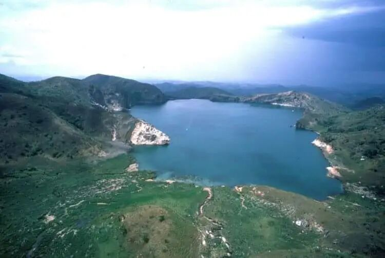
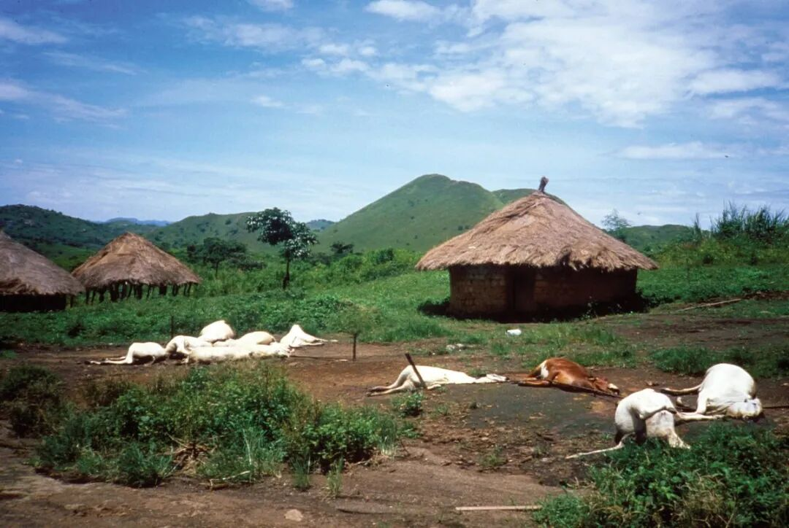
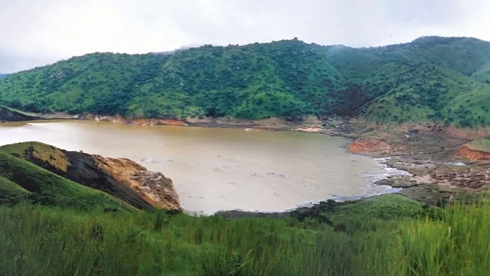
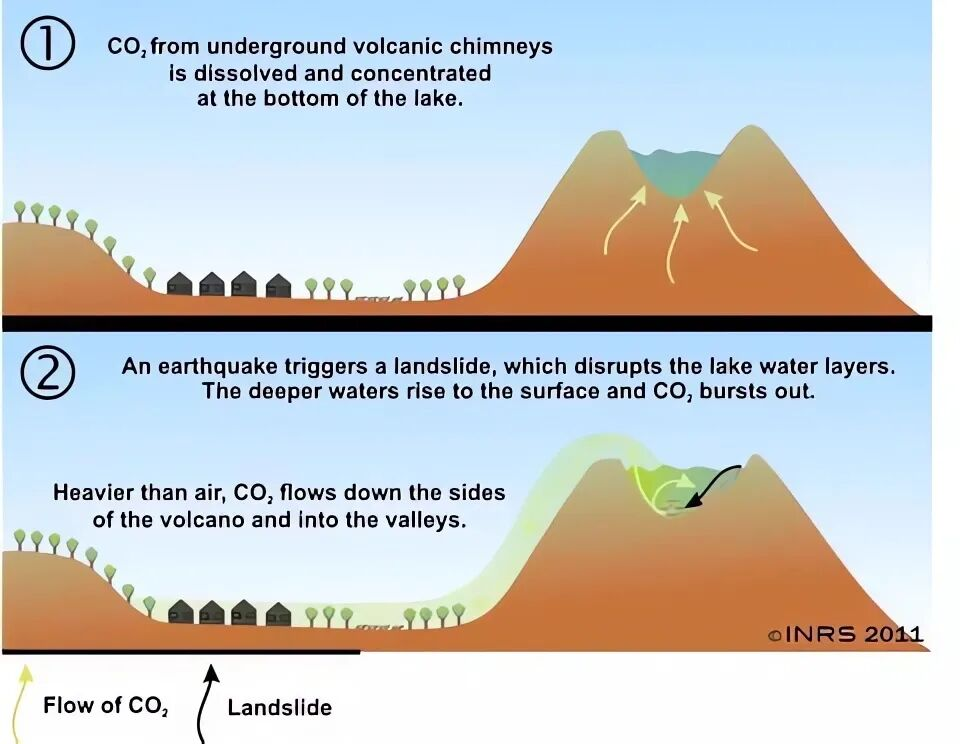
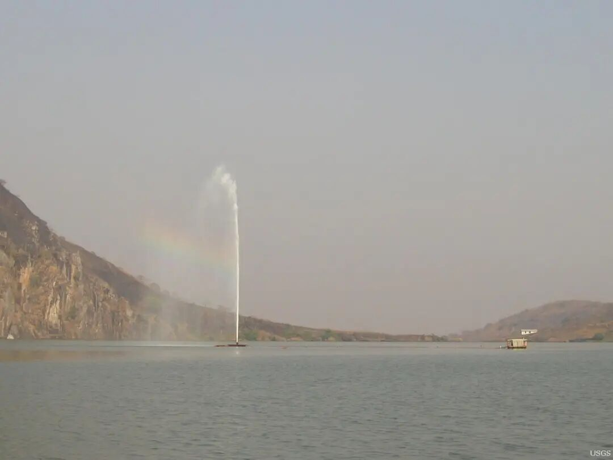

💡 一股神秘气流飘过山村，1700人瞬间丧命
Lake Nyos: The Limnic Eruption That Killed 1700 People
1986年8月21日晚间，在非洲国家喀麦隆的西北部地区，一座名叫“尼奥斯”（Nyos）的湖泊突然爆发erupt[ɪˈrʌpt] v. 爆发出一连串轰鸣。
居住在湖畔山谷中的村民villager[ˈvɪlɪdʒər] n. 村民纷纷走出家门，想要查看外面的情况。他们并没有看到什么东西，只感到一股气流current[ˈkɜrənt] n. 气流扑面而来。紧接着，所有人都在一瞬间失去了意识consciousness[ˈkɑnʃəsnəs] n. 意识。
数小时过后，少数幸存者survivor[sərˈvaɪvər] n. 幸存者开始苏醒过来。他们还没有从意识模糊的状态中完全恢复recover[rɪˈkʌvər] v. 恢复，就惊恐地发现自己的家人已经变成了一具具尸体。
这些村庄在死一般的寂静中迎来了黎明dawn[dɔːn] n. 黎明，往日喧闹的鸟叫和虫鸣也荡然无存。
在那一天，死者的身上竟然没有一只苍蝇停留——因为附近的昆虫insect[ˈɪnsɛkt] n. 昆虫也全部都死了。

位于locate[ˈloʊkeɪt] v. 位于喀麦隆的尼奥斯湖。在这里，曾发生过一场震惊全球的神秘灾难disaster[dɪˈzæstər] n. 灾难。| The Adventure Collective
40年前的这一天，在尼奥斯湖周围25千米范围range[reɪndʒ] n. 范围内共有1746人失去了生命。同时，大量牲畜livestock[ˈlaɪvstɑk] n. 牲畜与野生动物也在一夜之间突然死亡。
除了遍地尸体，这些村庄看不出其他异常abnormal[æbˈnɔːrml] adj. 异常之处：田野依旧绿意盎然，房屋完好无损，村民的物品也全都好好地留在原地。死去的人们倒在家门口、炉灶stove[stoʊv] n. 炉灶旁，或是躺在自己的床上。他们身上找不到痛苦挣扎的痕迹trace[treɪs] n. 痕迹，似乎一瞬间就被夺走了生命。

在遇难perish[ˈpɛrɪʃ] v. 遇难村民之外，还有约3500头牲畜在这场灾难中死亡 | United States Geological Survey
事发现场状况令人困惑：很显然，它与地震、洪水等常见灾害calamity[kəˈlæmɪti] n. 灾害都不相符。起初，有人怀疑这是一场烈性传染病epidemic[ˌɛpɪˈdɛmɪk] n. 传染病爆发——然而，随后进入村庄的外部人员却没有一人染病。
这场离奇的灾难引发trigger[ˈtrɪɡər] v. 引发了全世界关注。一支跨国科研团队随即前往喀麦隆，对神秘事件展开调查investigate[ɪnˈvɛstɪɡeɪt] v. 调查。
在尼奥斯湖边，科学家们很快发现了种种异变anomaly[əˈnɒməli] n. 异变的迹象。灾难发生之后，湖水水位下降了大约一米，湖岸附近的树木也被尽数冲倒，原本深邃平静的蓝色湖水现在变成了浑浊turbid[ˈtɜːrbɪd] adj. 浑浊的褐色。这景象看起来就像是某种力量引发了一场巨大的海啸tsunami[tsuːˈnɑːmi] n. 海啸。

事发后，尼奥斯湖变成了浑浊的褐色，这说明湖水曾在某种力量推动下剧烈violent[ˈvaɪələnt] adj. 剧烈翻涌。| United States Geological Survey
当研究者从湖底采集水样时，他们亲眼目睹witness[ˈwɪtnɪs] v. 目睹了这股神秘力量的真身。一旦被提升至水面处，这些深层湖水就冲破采样器喷涌而出，像沸腾boil[bɔɪl] v. 沸腾一样冒出大量气泡。
这些现象说明，湖水中蕴含contain[kənˈteɪn] v. 蕴含着大量气体。检测detect[dɪˈtɛkt] v. 检测发现，这些气体几乎全部都是二氧化碳。
通过同位素isotope[ˈaɪsətoʊp] n. 同位素测定，科学家找到了二氧化碳气体的来源：它们并非由湖中生物产生，而是来自尼奥斯湖下方深层的地底。
尼奥斯湖位于一座休眠dormant[ˈdɔːrmənt] adj. 休眠火山的火山口。这座火山近期并没有喷发迹象，但在它的下方，岩浆magma[ˈmæɡmə] n. 岩浆活动仍在活跃地进行。岩浆活动正在持续产生富含二氧化碳的火山气体，气体顺着岩石间的缝隙fissure[ˈfɪʃər] n. 缝隙一路上浮。
如果这些气体直接释放release[rɪˈliːs] v. 释放到大气中，它们并不会造成多大问题。然而在这里，它们注入inject[ɪnˈdʒɛkt] v. 注入了尼奥斯湖的底部。这些气体在湖水中不断溶解dissolve[dɪˈzɒlv] v. 溶解蓄积，最终让整个湖泊变成了一颗威力巨大的二氧化碳炸弹。
气体的溶解度随压强pressure[ˈprɛʃər] n. 压强升高而增加，这意味着在水压较高的湖底，水中可以积累的二氧化碳量会远远超出湖面水平。在常温ambient[ˈæmbiənt] adj. 常温常压下，1升水中可以溶解接近1升二氧化碳气体；而在尼奥斯湖底最深处，1升湖水就足以容纳accommodate[əˈkɒmədeɪt] v. 容纳高达20升二氧化碳。
尼奥斯湖底同时具备高压环境environment[ɪnˈvaɪrənmənt] n. 环境和不断充入的二氧化碳。二氧化碳在这里大量溶解蓄积，就像是制造出了一瓶巨型汽水soda[ˈsoʊdə] n. 汽水。| 图虫创意
尼奥斯湖位于四季温差较小的热带，平稳的气温减少了湖水对流，让表层与深层湖水能够长时间维持分层stratify[ˈstrætɪfaɪ] v. 分层状态。平时，聚集accumulate[əˈkjuːmjʊleɪt] v. 聚集在湖底的二氧化碳保持溶解状态，不会释放到周围环境中。
然而，当湖水被搅动agitate[ˈædʒɪteɪt] v. 搅动、深层湖水上翻到表层时，这颗“二氧化碳炸弹”就会突然引爆。
湖泊表层的压强比底部小得多，压强减小意味着二氧化碳溶解度急剧drastic[ˈdræstɪk] adj. 急剧下降。深层湖水一旦到达表层，其中蓄积的二氧化碳就无法继续保持溶解，大量二氧化碳就会变成气泡逸出escape[ɪˈskeɪp] v. 逸出。更糟糕worse[wɜːrs] adj. 更糟糕的是，翻涌的气泡还会进一步搅动湖水，导致更多深层湖水上翻。如此一来，湖底累积cumulative[ˈkjuːmjʊlətɪv] adj. 累积多年的二氧化碳就会在短时间内全部释放。
住在高处的目击者证实，事发当时尼奥斯湖上升起了一团巨大的白色云雾vapor[ˈveɪpər] n. 云雾，这应该就是夹杂着水滴喷涌而出的二氧化碳气体。科学家推测speculate[ˈspɛkjʊleɪt] v. 推测，这次喷发可能由山体滑坡等原因诱发，它释放的二氧化碳总量或许达到了1.2立方千米，也就是12亿立方米。
二氧化碳密度density[ˈdɛnsɪti] n. 密度约为空气的1.5倍，它会在空气中下沉，流入地势低洼的山谷地区——这些山谷正是多个村庄的聚集地。

喷发的气体沉入山谷，导致低洼地带二氧化碳浓度concentration[ˌkɒnsənˈtreɪʃn] n. 浓度迅速飙升 | volcano.oregonstate.edu
正常情况下，室外outdoor[ˈaʊtdɔːr] adj. 室外空气中大约含有0.04%二氧化碳。而在尼奥斯湖灾难发生时，周围部分地区的二氧化碳浓度可能会一度飙升soar[sɔːr] v. 飙升到10%。如此高浓度的二氧化碳足以迅速麻痹paralyze[ˈpærəlaɪz] v. 麻痹呼吸中枢，让人和动物没来得及挣扎就窒息身亡。
位于地势terrain[təˈreɪn] n. 地势较高处的人们吸入二氧化碳较少，他们更容易幸存下来。幸存者出现了恶心nausea[ˈnɔːziə] n. 恶心、呕吐、呼吸困难、疲劳头晕、意识模糊等症状，他们的表现也与二氧化碳中毒相符。
高浓度二氧化碳可抑制suppress[səˈprɛs] v. 抑制呼吸中枢，导致人和动物在短时间内死亡 | Jack Lockwood/US Geological Survey
至此，尼奥斯湖灾难的真相已经基本明了，但仍有一个性命攸关vital[ˈvaɪtl] adj. 性命攸关的问题尚未解决。
岩浆活动并未停止，新产生的二氧化碳仍在源源不断地注入尼奥斯湖湖底——这意味着在未来的某个时候，这颗“二氧化碳炸弹”还会再次引爆detonate[ˈdɛtəneɪt] v. 引爆。
幸好，一种简单的防灾装置device[dɪˈvaɪs] n. 装置可以避免悲剧重演。这种装置是一根从湖面通向湖底的细长管道pipe[paɪp] n. 管道。只要通过管道向上抽取湖水，就可以将深层湖水中的二氧化碳以可控controllable[kənˈtroʊləbl] adj. 可控的速度释放出来，最终让“气体炸弹”失去威力。

通过“排气管”抽取extract[ɪkˈstrækt] v. 抽取深层湖水，可以将尼奥斯湖中累积的二氧化碳以可控的速度释放出来。这样可以避免大规模突然喷发，同时还不会对周围环境造成危害harm[hɑːrm] n. 危害。| United States Geological Survey
在数年的实验验证verify[ˈvɛrɪfaɪ] v. 验证之后，第一条排气管道于2001年在尼奥斯湖正式启用。在2011年，排气管道的数量增加increase[ɪnˈkriːs] v. 增加到了3条。2019年的评估assess[əˈsɛs] v. 评估结果显示，这里的湖水排气工作达到了预期的效果，湖底蓄积的二氧化碳已经得到大幅削减。未来，这些排气管道还将长期运行operate[ˈɒpəreɪt] v. 运行，维持尼奥斯湖的稳定状态。
经过科学家与工程师们三十余年的努力，这座“杀人湖泊”终于彻底被人类制服tame[teɪm] v. 制服。
[1] Tuttle, M.L., Clark, M., Compson, H., Devine, J., Evans, W.C., Humphrey, A., Kling, G., Koenigsberg, E., Lockwood, J.P., and Wagner, G., 1987, The 21 August 1986 Lake Nyos gas disaster, Cameroon; final report of the United States scientific team to the Office of U.S. Foreign Disaster Assistance of the Agency for International Development: U.S. Geological Survey Open-File Report 87-97, iii, 58 p. :ill., maps ;28 cm., https://doi.org/10.3133/ofr8797.
[2] https://www.sciencedirect.com/science/article/abs/pii/S1464343X19302286
[3] https://en.wikipedia.org/wiki/Lake_Nyos_disaster
[4] https://www.smithsonianmag.com/science-nature/defusing-africas-killer-lakes-88765263/
[5] https://www.bbc.co.uk/science/horizon/2001/killerlakestrans.shtml
[6] https://www.atlasobscura.com/articles/lake-nyos-1986
封面cover[ˈkʌvər] n. 封面图来源：United States Geological Survey